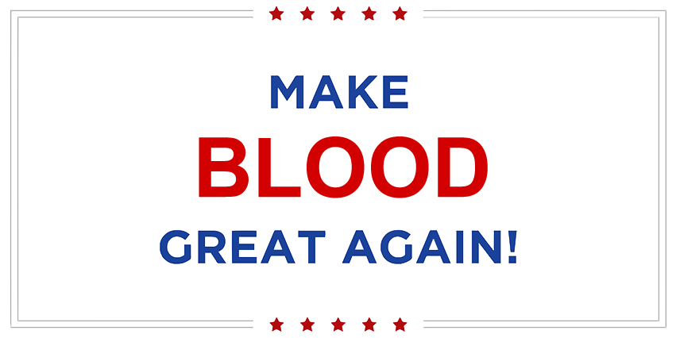

<!--
@license
Copyright (c) 2016 The Polymer Project Authors. All rights reserved.
This code may only be used under the BSD style license found at http://polymer.github.io/LICENSE.txt
The complete set of authors may be found at http://polymer.github.io/AUTHORS.txt
The complete set of contributors may be found at http://polymer.github.io/CONTRIBUTORS.txt
Code distributed by Google as part of the polymer project is also
subject to an additional IP rights grant found at http://polymer.github.io/PATENTS.txt
-->

<link rel="import" href="../bower_components/polymer/polymer-element.html">
<link rel="import" href="../bower_components/paper-button/paper-button.html">
<link rel="import" href="../bower_components/iron-flex-layout/iron-flex-layout.html">
<link rel="import" href="../bower_components/iron-flex-layout/iron-flex-layout-classes.html">
<link rel="import" href="shared-styles.html">

<dom-module id="fb-home">
  <template>
    <style include="shared-styles iron-flex iron-flex-alignment">
       :host {
        display: block;
      }

      .container {
        max-width: 980px;
        min-height: 480px;
        margin: 12px auto;
      }

      img {
        max-width: 540px;
      }

      a {
        text-decoration: none;
      }

      .login,
      .welcome {
        display: flex;
        flex-direction: column;
        align-items: center;
        justify-content: center;
        text-align: center;
        min-width: 280px;
        max-width: 280px;
        padding: 48px 16px 64px 16px;
      }

      .login h2,
      .welcome h2 {
        font-size: 25px;
        font-weight: 400;
        color: black;
      }

      .welcome h2 span {
        font-size: 18px;
      }

      paper-button {
        width: 100%;
        margin: 6px auto;
        color: white;
        font-size: 14px;
      }

      paper-button.google {
        background: #DD4B39;
      }

      paper-button.facebook {
        background: #32508E;
      }

      .info {
        padding: 48px 16px;
        background-color: var(--app-primary-color);
      }

      .info p {
        max-width: 860px;
        margin: 0 auto;
        line-height: 2em;
        color: rgba(255, 255, 255, 0.85);
        text-align: center;
      }

      .card.login[hidden],
      .card.welcome[hidden] {
        display: none;
      }

      .welcome h2,
      .login h2 {
        margin-bottom: 6px;
      }

      .login p {
        margin-bottom: 2em;
      }

      @media screen and (max-width: 860px) {
        .container {
          flex-direction: column-reverse !important;
        }
        img {
          width: 80%;
        }
        .welcome, .login{
          min-width: 80%;
          max-width: 80%;
        }
        .image {
          text-align: center;
          padding: 36px 0;
        }
      }
    </style>


    <div class="container layout horizontal center">
      <div class="flex image">
        
      </div>
      <dom-if if="{{!user}}">
        <template>
          <div class="card login">
            <h2>Login</h2>
            <p>Click the button below and<br>let the magic happen</p>
            <div class="button-container">
              <paper-button class="google" on-tap="google_login">Sign In with Google</paper-button>
              <paper-button class="facebook">Sign In with Facebook</paper-button>
            </div>
          </div>
        </template>
      </dom-if>

      <dom-if if="{{user}}">
        <template>
          <div class="card welcome">
            <h2><span>Welcome back,</span><br>{{user.displayName}}</h2>
            <p>If you got nothing to do, <br>why don't go donate blood? <br>And you get free Milo too!</p>
            <div class="button-container">
              <a href="/hospital">
                <paper-button raised class="google">Find hospital to donate</paper-button>
              </a>
            </div>
          </div>
        </template>
      </dom-if>
    </div>
    <div class="info">
      <p>A blood donation occurs when a person voluntarily has blood drawn and used for transfusions and/or made into biopharmaceutical
        medications by a process called fractionation (separation of whole-blood components). Donation may be of whole blood
        (WB), or of specific components directly (the latter called apheresis). Blood banks often participate in the collection
        process as well as the procedures that follow it.</p>
    </div>
  </template>

  <script>
    class FbHome extends Polymer.GestureEventListeners(Polymer.Element) {
      static get is() { return 'fb-home'; }

      static get properties() {
        return {
          user: Object
        }
      }

      _showHidden() {
        console.log('?')
        return true;
      }

      google_login() {
        var provider = new firebase.auth.GoogleAuthProvider();
        firebase.auth().signInWithPopup(provider).then(result => {
          // window.history.pushState({}, null, '/settings');
          // window.dispatchEvent(new CustomEvent('location-changed'));
        })
          .catch(error => {
            console.log('error')
          })
      }
    }

    window.customElements.define(FbHome.is, FbHome);
  </script>
</dom-module>